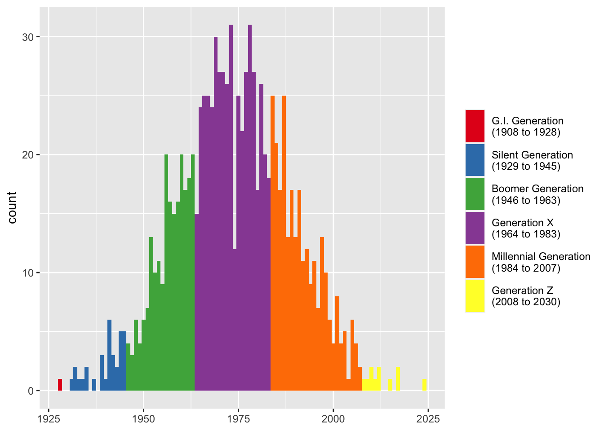
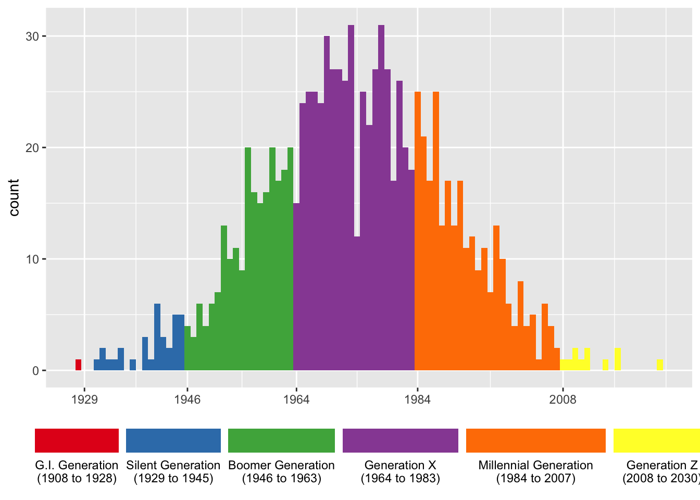

remotes::install_github("joeystanley/generations")I’m happy to announce the release of another R package, generations! I’ve apparently caught the creating-R-packages bug because this is my fourth one this year (futurevisions, barktools, joeysvowels, and now generations). This one provides some functions to easily convert years to generational cohorts (Boomer, Gen X, Millennial, Gen Z, etc.).
I recently read Howe & Strauss’ book, Generations: The History of America’s Future, 1584 to 2069. While the generational theory they propose isn’t water-tight, it is intriguing. Relatedly, I’ve seen lots of linguistics studies that model age in generational cohorts. (Ideally, we’d model age as a continuous variable, of course, but sometimes there’s just not enough data to do so.) I used a categorical age variable in the models in my dissertation and in other recent studies and, while it’s not perfect, it seems to work well enough.
Well, so now that I’m converting age into generational cohorts in lots of different projects, my code is starting to get a little repetitive. And in the R world, they say if you end up writing the same code a lot, might as well wrap it up into a package. This idea came to me about a week ago and this weekend I found some time to put this together.
The result is generations. And, I’ve made it so that it doesn’t depend on any other packages, so it was fun for me to figure out how to do some things in base R that I only knew how to do in tidyverse, which was fun for me! The rest of this post is the readme page for the package. You can find more about the package at joeystanley.github.io/generations.
Installation
The package currently lives on GitHub, so you can install it like you would with any other package on GitHub:
You can then load it like you can with any library.
library(generations)For the purposes of this tutorial, I’ll load ggplot and dplyr as well.
library(tidyverse)Converting years to generations
The main function in this package is generations(). Given a vector of integers, it’ll return a factor of generation names. First, I’ll generate some random years of birth.
yobs <- floor(runif(10, 1900, 2020))
yobs [1] 1972 1932 1987 2018 1974 1979 1952 1937 1994 1980I can now easy convert that into generations.
generations(yobs) [1] Gen X Silent Millennial Gen Z Gen X Gen X
[7] Boomer Silent Millennial Gen X
Levels: Silent Boomer Gen X Millennial Gen ZThis function works on any year between 1435 and 2030. Numbers outside that range return NA.
Note that by default, the function will return the vector as factor, with the levels ordered so that the oldest generation in the vector is first. To get a character vector instead, add the argument as_factor = FALSE.
Customizing output
There are some tweaks you can do to adjust the output of generations. First, you can return longer forms of the generational names by specifying full_names = TRUE.
generations(yobs, full_names = TRUE) [1] Generation X Silent Generation Millennial Generation
[4] Generation Z Generation X Generation X
[7] Boomer Generation Silent Generation Millennial Generation
[10] Generation X
5 Levels: Silent Generation Boomer Generation ... Generation ZWhat this does is simply add "Generation" to the end of each one, unless it’s "Gen X" (or Y, or Z), in which case it’ll expand it out to simply "Generation X".
You can also show the years included in each generation by adding the years = TRUE argument. This will add a space and, inside a pair of parentheses, the start and end years of that generation, separated by an en dash.
generations(yobs, years = TRUE) [1] Gen X (1964–1983) Silent (1929–1945) Millennial (1984–2007)
[4] Gen Z (2008–2030) Gen X (1964–1983) Gen X (1964–1983)
[7] Boomer (1946–1963) Silent (1929–1945) Millennial (1984–2007)
[10] Gen X (1964–1983)
5 Levels: Silent (1929–1945) Boomer (1946–1963) ... Gen Z (2008–2030)The primary purpose of this is for visualizations, since not everyone is familiar with (or agrees with) the year ranges. For example, if you’ve got a bunch of people and want to visualize the distribution of when they were born, you could have very informative legends.
many_yobs <- tibble(yob = floor(rnorm(1000, 1975, 15))) %>%
mutate(gen = generations(yob, full_names = TRUE, years = TRUE))
ggplot(many_yobs, aes(yob, fill = gen)) +
geom_histogram(binwidth = 1) +
scale_fill_brewer(name = NULL, palette = "Set1")
How this additional portion is formatted can be adjusted. If rendering an en dash is troublesome for you, you can change it to something else with years_range_sep. You may also want to change the space between the generation name and the opening parenthesis into a newline character with years_sep, again for visualization purposes.
many_yobs <- many_yobs %>%
mutate(gen = generations(yob, full_names = TRUE, years = TRUE,
years_sep = "\n", years_range_sep = " to "))
ggplot(many_yobs, aes(yob, fill = gen)) +
geom_histogram(binwidth = 1) +
scale_fill_brewer(name = NULL, palette = "Set1") +
labs(x = NULL) +
theme(legend.key.height = unit(1, "cm"))
If you want to get really fancy, you can make the legend keys approximate the width they take up on the x-axis and put better tics marks.
widths <- many_yobs %>%
group_by(gen) %>%
summarize(width = max(yob) - min(yob)) %>%
ungroup() %>%
mutate(width = width / max(width) * 1.4) # you may have to fudge this a little more
ggplot(many_yobs, aes(yob, fill = gen)) +
geom_histogram(binwidth = 1) +
scale_fill_brewer(name = NULL, palette = "Set1") +
scale_x_continuous(breaks = c(1929, 1946, 1964, 1984, 2008, 2030)) +
labs(x = NULL) +
theme(legend.position = "bottom") +
guides(fill = guide_legend(nrow = 1, label.position = "bottom",
keywidth = widths$width, default.unit = "inches"))
Querying generation data
To see a list of the generational data, you can use show_generations(), which will return a data frame containing the names, start years, and end years.
show_generations() name start end
1 Gen Z 2008 2030
2 Millennial 1984 2007
3 Gen X 1964 1983
4 Boomer 1946 1963
5 Silent 1929 1945
6 G.I. 1908 1928
7 Lost 1886 1907
8 Missionary 1865 1885
9 Progressive 1844 1864
10 Gilded 1822 1843
11 Transcendental 1794 1821
12 Compromise 1773 1793
13 Republican 1746 1772
14 Liberty 1727 1745
15 Awakening 1704 1726
16 Enlightenment 1675 1703
17 Glorious 1649 1674
18 Cavalier 1621 1648
19 Puritan 1594 1620
20 Parliamentary 1569 1593
21 Elizabethan 1542 1568
22 Reprisal 1517 1541
23 Reformation 1497 1516
24 Humanist 1459 1496
25 Aurthurian 1435 1458You can also get simple information. For example, if you want to know when the start or end year of a particular generation is, you can use get_start() or get_end():
get_start("Silent")[1] 1929get_end("Millennial")[1] 2007You can also find the names of neighboring generations with get_prev_gen() and get_next_gen(), though these were mostly created for internal purposes only rather than for you to use.
get_next_gen("Millennial")[1] "Gen Z"get_prev_gen("Missionary")[1] "Progressive"Note that if ask for something newer than Gen Z or older than Aurthurian it will return NA.
Customizing generation data
The data that this package uses is loaded as a hidden object when you load the package. You may modify it with the functions described in this section. These changes will affect the dataset so long as the generations package is loaded. You’ll have to reset the data each time to reload it.
The labels and years for each generation are mostly borrowed from Howe & Strauss’ Generational Theory books. However, not everyone agrees on the names and year ranges for the various generations. For this reason, the generations package makes it easy to modify the generations data to your liking.
To rename a generation, use rename_generation(), with the old name first and the new name second. For example, if you want to use Zoomer instead of Gen Z, you can do so.
rename_generation("Gen Z", "Zoomer")Gen Z has been renamed ZoomerYou’ll get a message informing you that the change has been made. If you now run show_generations() you’ll see that the change has been made and if you rerun generations(), you’ll get updated results.
show_generations() name start end
1 Zoomer 2008 2030
2 Millennial 1984 2007
3 Gen X 1964 1983
4 Boomer 1946 1963
5 Silent 1929 1945
6 G.I. 1908 1928
7 Lost 1886 1907
8 Missionary 1865 1885
9 Progressive 1844 1864
10 Gilded 1822 1843
11 Transcendental 1794 1821
12 Compromise 1773 1793
13 Republican 1746 1772
14 Liberty 1727 1745
15 Awakening 1704 1726
16 Enlightenment 1675 1703
17 Glorious 1649 1674
18 Cavalier 1621 1648
19 Puritan 1594 1620
20 Parliamentary 1569 1593
21 Elizabethan 1542 1568
22 Reprisal 1517 1541
23 Reformation 1497 1516
24 Humanist 1459 1496
25 Aurthurian 1435 1458generations(yobs) [1] Gen X Silent Millennial Zoomer Gen X Gen X
[7] Boomer Silent Millennial Gen X
Levels: Silent Boomer Gen X Millennial ZoomerBecause people may want to use the term Zoomer instead of Gen Z, a shortcut function, use_zoomer(), which is just a wrapper around rename_generation("Gen Z", "Zoomer"), is included in the package. The other shortcut functions are use_gen_y(), use_13th(), use_baby_boom() as well as their reciprocals use_gen_z(), use_millennial(), use_gen_x() and use_boomer().
You may also want to change the years. For example, many people consider 1997 as the end of the Millennial Generation. You can make this change with redefine_generation(). With this function, you must specify the new start and the new end year.
redefine_generation("Millennial", 1983, 1997)Gen X is now from 1964 to 1982Millennial is now from 1983 to 1997Zoomer is now from 1998 to 2030Since changing one generation impacts adjacent generations, you’ll get a message showing you what the new ranges are for this, the previous, and the next generations.
You can reset the data back to its original form with reset_generations().
Conclusion
That’s the package so far! I plan on adding more things in the future, primarily to handle stability issues and to include some error catching. Hopefully, if you use generational cohorts in your data, this package is useful for you.